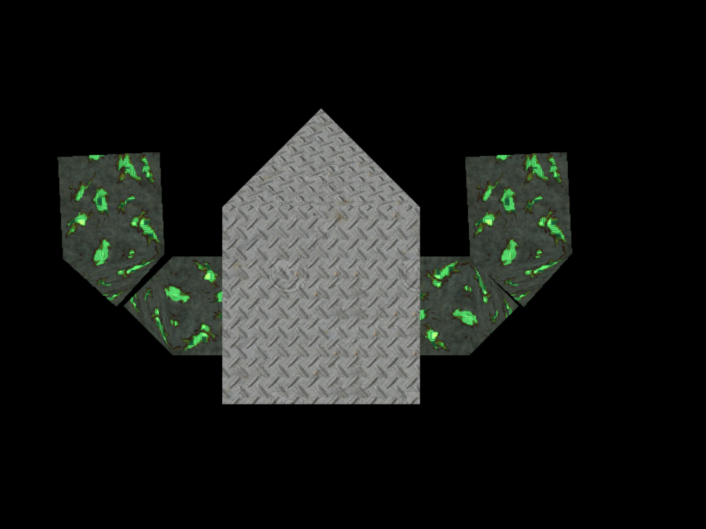

COMP 2501 - Winter 2014 Tutorial #6
Textures
Description:
The purpose of this tutorial is to familiarize yourself with textures.
To get credit for the tutorial you must complete, or make significant progress, on the problems provided and demonstrate your results to the tutorial TA.
If you cannot complete the tutorial in the time allotted you may demonstrate the completed results to the TA during their office hours.
These tutorials are based on the Rastertek set of tutorials.
Instructions:
Overview
This tutorial will explain how to use texturing in DirectX11. Texturing allows us to add photorealism to our scenes by applying photographs and other images onto polygon faces. For example in this tutorial we will take some images like the following:
And then apply it to the robot from the previous tutorials to produce the following:

The format of the textures we will be using are .dds files. This is the Direct Draw Surface format that DirectX uses. Microsoft Visual Studio 2012 comes with a built-in DDS converter. To access it, simply open an image file in the Visual Studio IDE. From here, you can create a new texture of any size and format and then cut and paste your image or other format texture onto it and save it as a .dds file. It is very simple to use.
And before we get into the code we should discuss how texture mapping works. To map pixels from the .dds image onto the polygon we use what is called the Texel Coordinate System. This system converts the integer value of the pixel into a floating point value between 0.0f and 1.0f. For example if a texture width is 256 pixels wide then the first pixel will map to 0.0f, the 256th pixel will map to 1.0f, and a middle pixel of 128 would map to 0.5f.
In the texel coordinate system the width value is named "U" and the height value is named "V". The width goes from 0.0 on the left to 1.0 on the right. The height goes from 0.0 on the top to 1.0 on the bottom. For example top left would be denoted as U 0.0, V 0.0 and bottom right would be denoted as U 1.0, V 1.0. The diagram below illustrates this system:
Now that we have a basic understanding of how to map textures onto polygons we can look at the updated frame work for this tutorial.
Code
Open Microsoft Visual Studio 2012 and open the project found in the tutorial6 folder. Run the project (hit F5), it should build and open a window like the following:
That's right, there's an error with the model. The origin of the error is the Graphics class, in the Initialize() method:
// Initialize the model object.
result = m_Model->Initialize(m_D3D->GetDevice(), L"../Engine/REPLACE-ME-BODY.dds", L"../Engine/REPLACE-ME-ARMS.dds");
if(!result)
{
MessageBox(hwnd, L"Could not initialize the model object.", L"Error", MB_OK);
return false;
}
Notice the "REPLACE-ME-*.dds" text. These refer to files in our Engine directory that don't actually exist yet. We need to supply .dds textures file that we'll then apply to our robot.
Problem 1)
The first step in creating a texture file is to look online for a suitable image, or create your own if you're feeling artsy. A good website that doesn't require any sign-up and offers free textures is Mayang's Free Textures. You'll need to choose two images, one for the robot's body, and one for the robot's arms. Choose any images you like that you think might suit your robot and save them onto your computer.
The next step in creating a texture is to convert our newly downloaded image into a .dds file that our code can understand. To do this we will use the built-in Visual Studio 2012 image conversion functionality.
Open one of your images in the IDE (File->Open->File...). Your screen should look something like this:
From here, simply navigate to File ->Save [..] As, and then save your file in the "DirectDrawSurface (*.dds)" format. Save it in to your source code directory. Congratulations, you've now created a texture file that our application will be able to interpret!
To load this texture into the application, simply change the "REPLACE-ME-*.dds" text from before with whatever you named your files. If your texture was saved properly, your robot should now look something like this:
Hmm.. Something's not right.
Problem 2)
The reason our robot looks so strange is because we haven't actually mapped the texture coordinates to our vertices yet, so the program doesn't know how to use the texture file we've provided it.
Notice an important change in vertextype.h since the last tutorial:
struct VertexType
{
XMFLOAT3 position;
XMFLOAT2 texture;
};
The VertexType now has a texture component instead of a color component. The texture vector is always U first and V second. For example the first texture coordinate is bottom left of the triangle which corresponds to U 0.0, V 1.0. Use the diagram at the top of this page to figure out what your coordinates need to be. Note that you can change the coordinates to map any part of the texture to any part of the polygon face.
In case you've forgotten, we specify our robot's vertices in the robot.cpp file. There already exist 5 vertices with position components specified for each, you'll need to add in their texture coordinates.
Note: Textures are mapped to your polygons the same way colors were, they're interpolated. That means that you don't specify which texture coordinate to use at each pixel of your shape, you just specify what coordinate to use at the vertices and the values in between are estimated in the pixel shader.
See if you can get a direct mapping onto the polygons, that means no skewing of the textures. So avoid something like this:
And go for something more like this:
Try creating different textures and seeing what kind of different robots you can make!